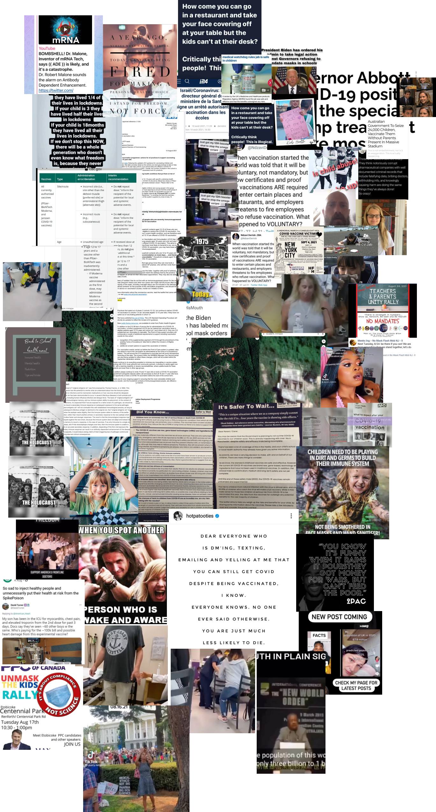
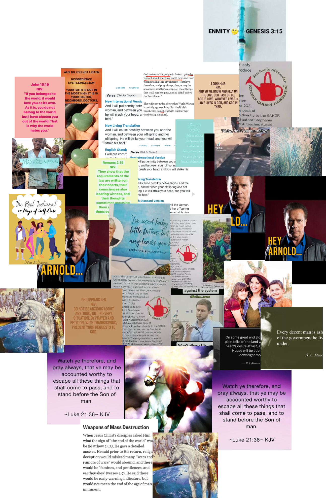

A certain kind of doom scroll
In 2016, a white man with an assault rifle entered a pizzeria..
In 2016, a white man with an assault rifle entered a pizzeria in the United States, looking to rescue children from a child trafficking ring.
In 2016, a white man with an assault rifle entered Comet Pizza in the United States, believing children were being sold in a trafficking ring, and that former presidential candidate Hilary Clinton was involved.
45 minutes after entering the pizzeria, he was arrested.
But, he couldn’t find the children; there was no child trafficking ring. The man was Edgar Maddison Welch, he was carrying a Colt AR-15 rifle, a Colt .38 handgun, a shotgun and a folding knife.
Edgar reportedly expressed remorse after being arrested- he was just worried about the children.
Edgar reportedly expressed remorse after being arrested- he was just worried about the children in the sex trafficking ring.
A woman posts photos of her children online.
A woman posts photos of her children, and her parenting style online.
A woman posts photos of her children, her parenting style, and the hashtag WWG1WGA on instagram. Jalynn Schroeder, a millennial mom influencer with more than 50,000 followers on Instagram posted WWG1WGA multiple times in 2020 before Instagram banned the hashtag.
She’s really concerned about the children.
She’s really concerned about the children and child trafficking.
She’s read online.
She’s read online, and on social media about this issue.
She’s done the research, just like Edgar Maddison Welch.
She’s read online, why isn’t anyone talking about this?
Her followers are really concerned, too. This is a big issue. Why isn’t anyone talking about it?
Trump can help- could help. Once he comes back. Drain the swamp.
Them: Covid
Her: Child Sex Trafficking
Them: Riots&Protests
Her: Child Sex Trafficking
Them: Is this all you care about?
Her: Yes. That’s literally all I care about.
Don’t you see?
There are hand signals, you need to be talking about this. The children, won’t you think of the children?
#savethechildren---MAGA overlapping with QANON and sex trafficking

#savethechildren--COVID
#savethechildren---religious rhetoric
#savethechildren---politics (pro-life, anti-trans, general conservatism, not directly child trafficking)
#savethechildren---afghanistan